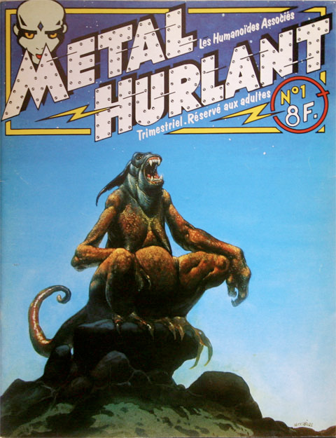

Metal Hurlant
Métal hurlant est un magazine français de bande dessinée mensuel de science-fiction édité pour la première fois en 1975 par les Humanoïdes associés, pendant 67 ans, avant de faire une pause de 27 ans pour revenir en 2002. Ce magazine regroupe plusieurs histoires racontées par des illustrateurs sur des sujets tous plus différents les uns que les autres.
Pourquoi un brandbook ?
J’ai pu découvrir Métal Hurlant grâce à un illustrateur Ugo Bienvenu qui a fait la première de couverture du numéro d'automne 2021, étant une grande admiratrice de son travail je n’ai pas pu m’empêcher d’acheter ce magazine et découvrir de nombreux illustrateurs. Ce genre de support est une grande source d’inspiration au quotidien, d’une part grâce à son grand nombres d’illustrateurs reconnuent qui illustre, mais également grâce à leurs nombreuses études sur le monde qui nous entoure et comment le monde d’avant, d’aujourd’hui et de demain fonctionne.
Ce que ce livre m'a apporté
Ce magazine qui regroupe plusieurs bandes dessinées m’apportée et m’apporte encore beaucoup de culture artistique, mais également beaucoup d’inspirations à travers les nombreux illustrateurs et histoires raconter et illustrer dans le magazine. Malgré le fait que je suive une formation dans le domaine du digital, le papier est très important et très présent dans ma vie, c’est pourquoi les livres m’apporte énormément, je dirai même que les livres sont ma source première d’inspirations.